Inferring
an Elephant
A tangible human–AI interface that turns competing interpretations of a partial image into a printed hybrid specimen.
Interaction design · Physical prototyping · Research & writing
▪ Accepted Demo · ACM UIST 2026
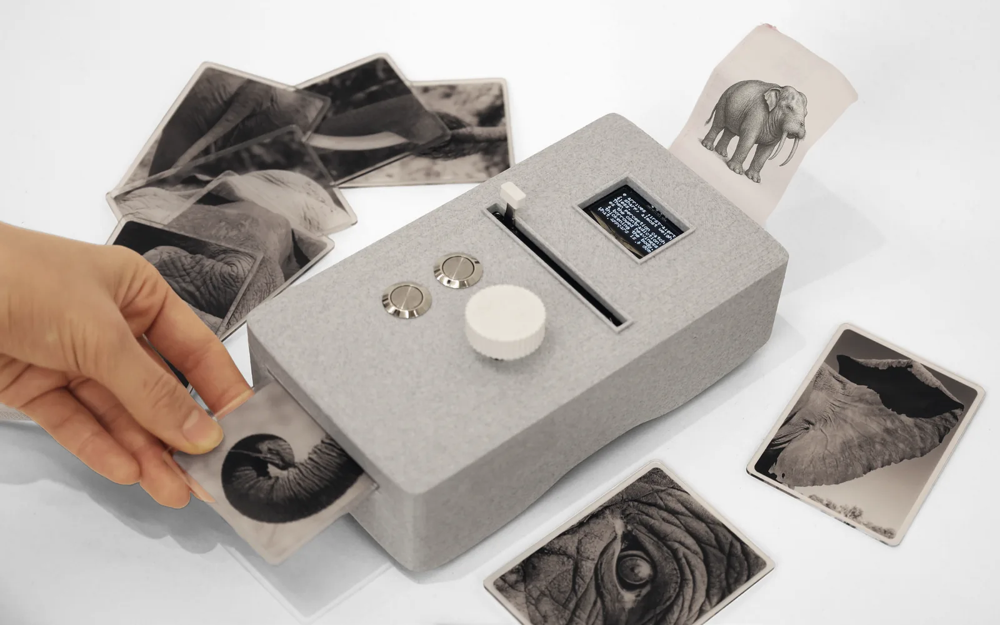
The piece began with a fragment. We showed a single part of an elephant to an animal-recognition model and to people, and compared what each inferred. Neither sees the whole animal; both extrapolate confidently from a sliver. Where the model’s guesses and a person’s rarely coincide, a gap opens — and that gap, not the correct answer, is where the interaction lives.
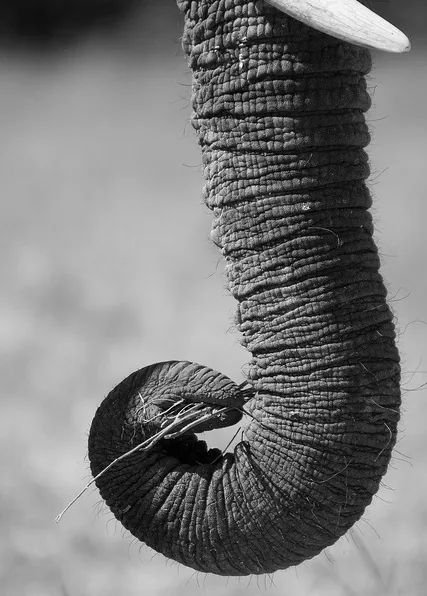
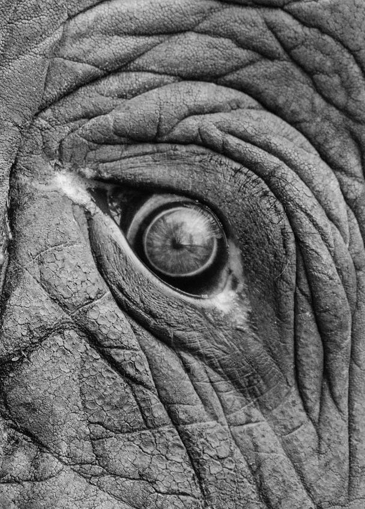
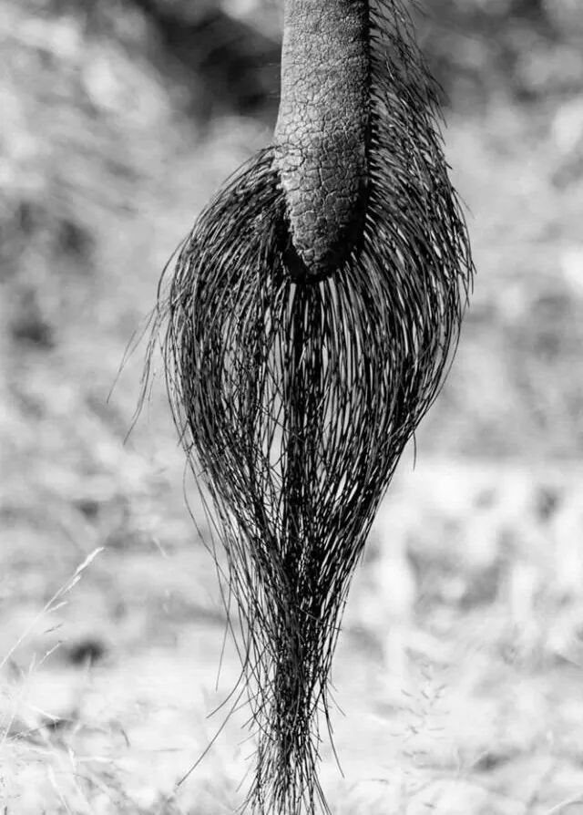
Across seven parts, about half of the people we asked still named the elephant; the rest saw everything from killer whale to peacock. The machine misreads too — but almost never along the same path. That mismatch, not the right answer, is the material the interface works with.
The whole exchange happens on one handheld device, in four movements.
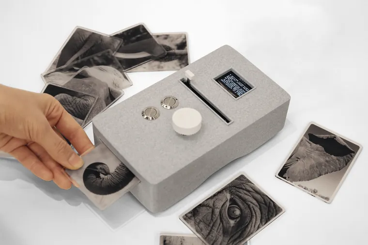
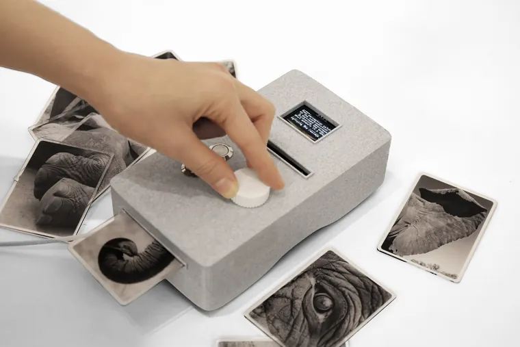
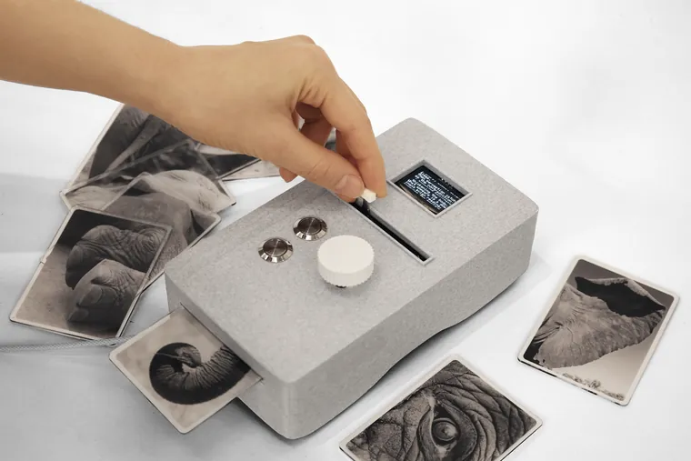
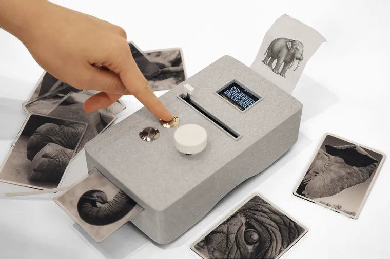
One device runs the whole loop. It reads the fragment, offers ten candidate species with the confidence scores hidden, and lets you keep two — an anchor you find plausible and a challenger that intrigues you — then weight one against the other. Computer vision, a language model, and image generation turn that choice into a creature, printed as a specimen.
Arduino-driven controls — NFC scan-in, rotary select, dominance slider, thermal print.
Each print fuses two chosen species at the weight you set. Because the anchor, the challenger, and the balance are all yours, one fragment can resolve into very different creatures — a rhinoceros armored like a trilobite, a zebra surfacing from an elephant seal. None is correct; each is a record of a choice someone made.
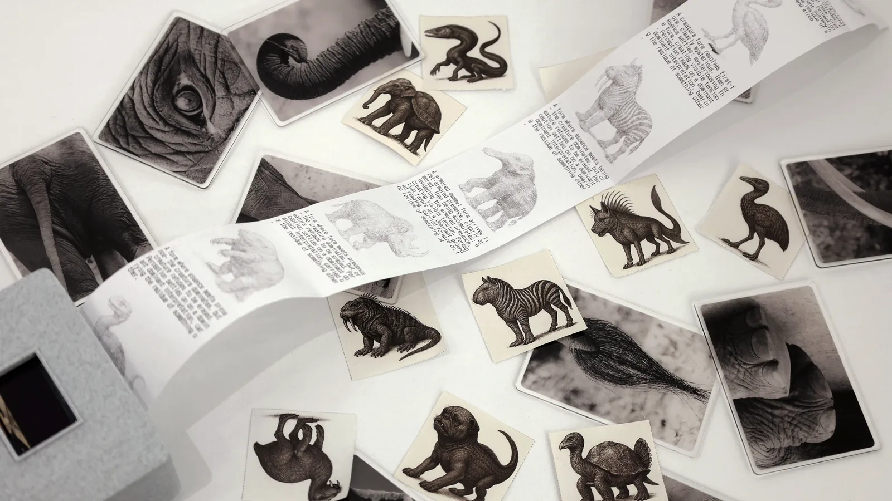
Given ten readings, most people reached for the surprising one over the plausible one — and described the surprise as engaging, not frustrating.
An earlier build showed confidence scores; they pulled attention to the top and bottom of the list, so we removed them.
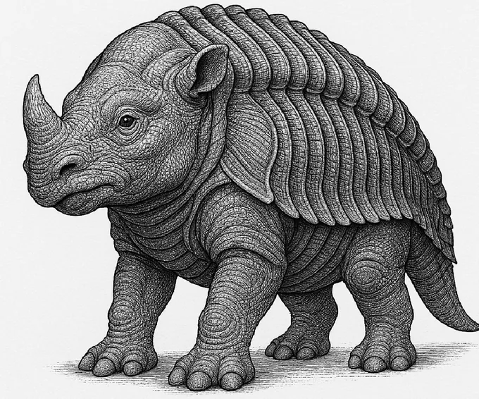
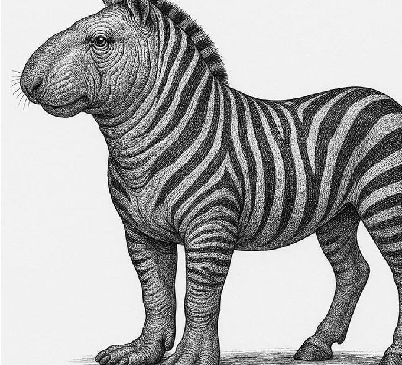
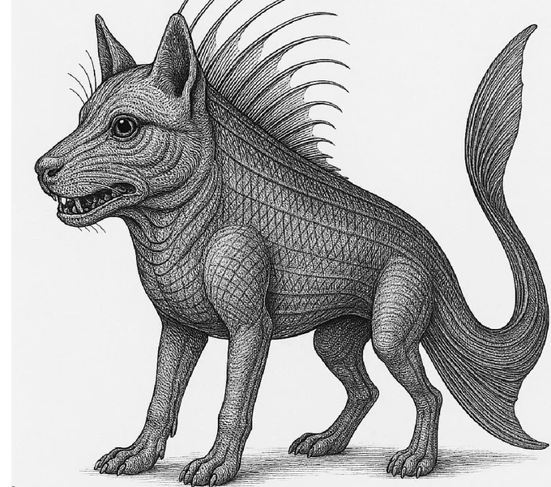
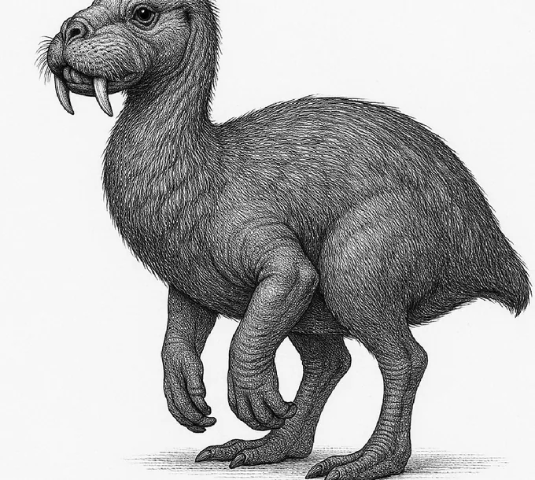